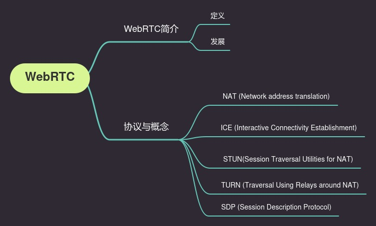

WebRTC概念介绍
本文最后更新于：2023年4月15日 下午

WebRTC
WebRTC（Web Real-Time Communication）。Real-Time Communication，实时通讯。
WebRTC能让web应用和站点之间选择性地分享音视频流。在不安装其它应用和插件的情况下，完成点对点通信。
WebRTC背后的技术被实现为一个开放的Web标准，并在所有主要浏览器中均以常规JavaScript API的形式提供。对于客户端（例如Android和iOS），可以使用提供相同功能的库。 WebRTC是个开源项目，得到Google，Apple，Microsoft和Mozilla等等公司的支持。2011年6月1日开源并在Google、Mozilla、Opera支持下被纳入万维网联盟的W3C推荐标准。
WebRTC包括一系列API和相互关联的协议来实现通信。
相关技术
VoIP
Voice over Internet Protocol，在网络上传输声音消息的技术。
例如网络音频通话。或者叫做IP电话，宽带电话。使用VoIP技术的一大原因是费用低。
相关协议
NAT
Network address translation，网络地址转换。
NAT能给你的设备一个公共IP地址。一个路由器（router）有一个公共IP地址，每个连接到路由的设备有一个私有的IP地址。
设备发送请求时，会从一个特定端口，通过私有IP发送到路由的公共IP。这样每个设备在网上不需要都有一个公共IP地址，但也能被其它设备发现。
参考 IP Network Address Translator (NAT) Terminology and Considerations
ICE
Interactive Connectivity Establishment，互动式连接建立（交互式连通性建立）。
ICE是一套能让web浏览器之间互相连接的框架。通常来说，节点A到B是很难直接相连的。防火墙会阻止连接，设备没有公共IP地址，路由不允许直接连接其他节点。
ICE使用STUN或者TURN服务（或者同时使用两者）来建立连接。
STUN
Session Traversal Utilities for NAT (STUN) ，NAT会话传输工具。
STUN协议能发现客户端（节点）的公共地址。客户端发送一个请求给网上的STUN服务器，服务器返回客户端的公共地址。不管客户端在路由器的NAT后能否可达。
STUN为请求者提供了可公开访问的IP地址，它就不再参与对话了。

有些路由器会限制设备与外面其它设备的连接。这意味着即使STUN服务器知道了路由的公共IP地址，也没法建立连接。
这种情况下我们需要使用TURN。
TURN
Traversal Using Relays around NAT，使用中继绕过NAT传输。
一些路由器使用一种叫“Symmetric NAT”（对称型NAT）的限制。这意味着路由器仅允许之前连接过的节点（peer）来建立连接。
STUN提供了一个能让应用（终端，节点）穿过NAT的方法。STUN允许客户端获得一个传输地址（一个IP和端口）来获取其它节点的数据。
然而STUN获取到的地址不一定能被所有节点使用。这些地址是否可用取决于网络拓扑的情况。所以，单独STUN无法提供完整的穿越NAT的方案。
TURN协议允许两个处于NAT环境的主机利用中继进行通讯。客户端能够在TURN服务器上分配资源，与其它客户端（peer）进行通讯。
客户端关联一个TURN服务器的地址（relayed server address）来作为中继。
客户端发送报文给TURN服务，TURN服务使用relayed server address作为源地址向其他客户端中继转发报文。
穿越NAT，这个过程就像是“打洞”。也有人称TURN服务器为“打洞服务器”。

这么看，TURN服务器需要有大的带宽。因此，ICE会优先考虑直接通讯，无法直接通讯情况下会使用TURN。
参考 TURN rfc8656
SDP
Session Description Protocol，会话描述协议。
描述多媒体连接内容的协议。例如分辨率，格式，编码，加密算法等等。
实际上，SDP不是个真正的协议。它也是用来描述设备之间连接与传输多媒体的数据格式。
参考 SDP: Session Description Protocol | rfc8866